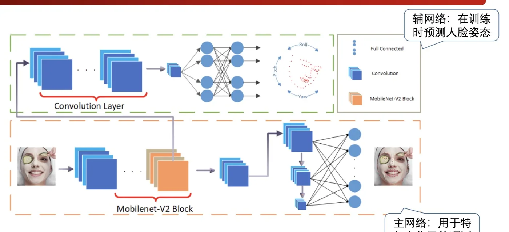
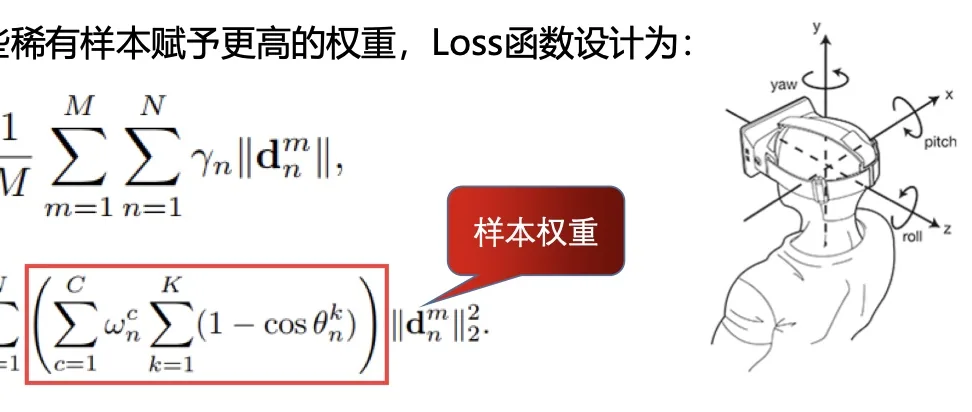
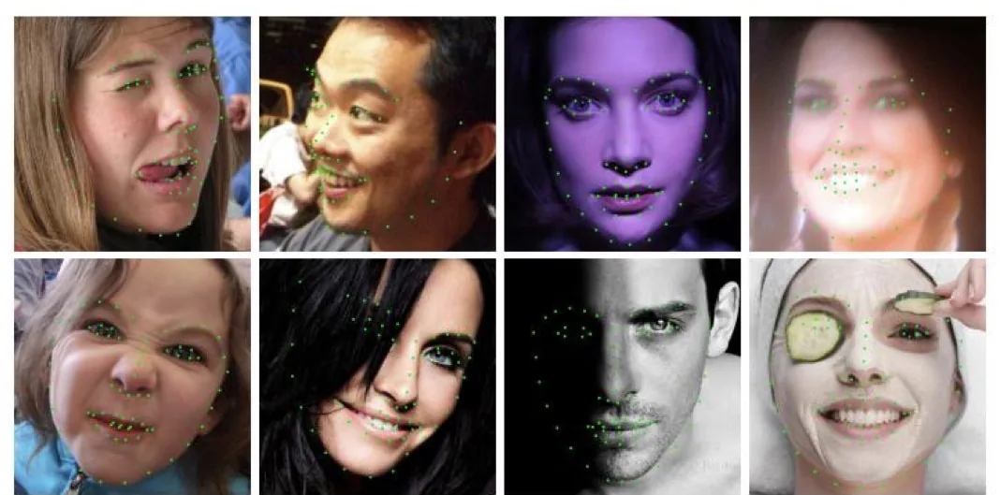

计算机视觉 · 第 8 章 人脸识别
8.4 轻量级关键点检测：PFLD 网络
DCNN 把精度做上去了，但它的三级级联要跑十几个网络，装不到手机上。这一节看 PFLD 是怎么在「高精度」和「轻量」之间找平衡的：先把关键点检测的四个难点摆清楚，再看它的双网络结构（主网络负责预测、辅网络只在训练时帮忙），最后看它最有想法的一处设计——按样本难度加权的损失函数。
1. 人脸特征点检测的四个挑战
课件把关键点检测的困难归纳成四条：
- 局部变化：表情、局部特殊光照、部分遮挡，会导致一部分关键点偏离了正常位置，或者干脆不可见；
- 全局变化：人脸姿态变化多样，另外因拍摄设备和环境影响，成像质量也有好有坏；
- 数据不均衡：体现在大部分是正脸数据，侧脸很少；
- 模型效率：在计算受限的设备（比如手机终端）上，必须要考虑计算速度和模型文件大小问题。
前两条是「准不准」的问题，第四条是「跑不跑得动」的问题，而第三条最容易被忽略——它是数据问题，却会直接变成模型问题。训练集里正脸占绝大多数，模型在正脸上训练得很充分，遇到侧脸、遮挡这些少量样本时精度就掉下来。PFLD 的损失函数设计，针对的正是这一条。
2. 双网络结构：主网络预测，辅网络陪练
PFLD 的网络由两部分组成：主网络用于特征点位置的预测；辅网络在训练时预测人脸姿态。

从课件给出的结构看，主网络用的是 MobileNet-V2 Block 加卷积层、全连接层——选择 MobileNet 系的基础模块，本身就是奔着「计算量小、模型小」去的。而辅网络的定位很关键：它只在训练时工作，用来预测人脸的姿态（yaw、pitch、roll 三个角度）。
为什么要多一个辅网络？因为它预测出的姿态信息要拿去给损失函数用：姿态越极端的样本，在训练时应该被赋予越大的权重。这相当于让网络在训练阶段「自己识别出难样本」，把注意力集中到侧脸、大角度这些稀有情况上——这也正好回应了第一个挑战里的数据不均衡。
3. 损失函数：给稀有样本更高的权重
课件先讲清了动机：考虑到样本的不平衡，为了能对那些稀有样本赋予更高的权重，损失函数设计为对每个样本、每个特征点的距离误差做加权求和：
L = (1/M) Σm=1M Σn=1N γn · ‖dnm‖
其中 M 为样本个数，N 为特征点个数，γn 为不同的权重，‖·‖ 为特征点的距离度量（预测位置与真实位置之间的距离）。也就是说，每个特征点的误差在求和时不是等权的，而是各自乘上一个权重 γn。
这个权重由两部分构成：
- 姿态角度：K = 3，这一项代表着人脸姿态的三个维度，即 yaw、pitch、roll 角度——角度越大，权重越大；
- 类别权重：C 为不同的人脸类别数（侧脸、正脸、抬头、低头、表情、遮挡等），wnc 是与类别对应的给定权重，如果某类别样本少，则给定权重大。

这套设计的思想可以一句话概括：把「样本不平衡」从数据层面搬到损失层面来补偿。数据层面难做的事情（去采集大量侧脸、遮挡样本），在损失层面用权重做近似——大角度的、稀有的样本，错一点就罚得更重，模型自然会被逼着把它们学好。
顺便对照一下：DCNN 用的是「多个网络取平均」来提升鲁棒性，PFLD 用的是「加权损失把难样本顶上来」。两者解决的是同一个问题——少数困难样本决定模型的实际可用性——只是切入点不同。
4. 效率：手机上的实时关键点检测
课件给出的结果是：在 ARM 安卓机上可以跑到 140 fps，模型大小仅 2.1 M。

把这三个数字放在一起看，PFLD 的定位就清楚了：它不是靠堆网络、堆数据把精度刷上去，而是在移动端算力约束下的高精度关键点检测。这也是它和 DCNN 最本质的区别——DCNN 证明「CNN 能做关键点检测」，PFLD 回答的是「怎么在手机上做好」。
本节小结
- 关键点检测有四个挑战：局部变化（表情、局部光照、遮挡）、全局变化（姿态、成像质量）、数据不均衡（正脸多、侧脸少）、模型效率（手机等算力受限设备要顾及速度和模型大小）。
- PFLD 采用双网络：主网络用 MobileNet-V2 Block 等轻量模块做特征点位置预测，辅网络只在训练时预测人脸姿态，为损失函数提供姿态信息。
- 损失函数对每个样本、每个特征点的距离误差加权求和：
L = (1/M) Σ Σ γn · ‖d‖。权重来自姿态三个角度（yaw、pitch、roll，角度越大权重越大）和类别权重（样本少的类别权重大）——用损失层面的加权来补偿数据层面的不均衡。 - 效率上，PFLD 在 ARM 安卓机上达到 140 fps、模型仅 2.1 M，把「高精度关键点检测」带到了移动端。